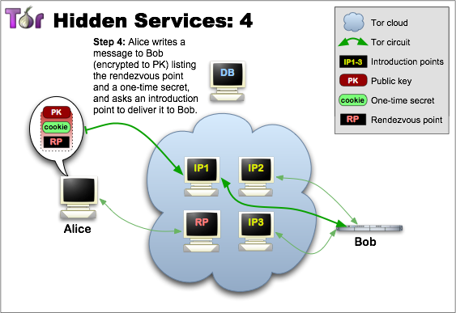

Arquitectura de las Redes Tor
Marta Gómez y Braulio Vargas
Índice
- ¿Qué es Tor?
- ¿Por qué Tor protege mejor la privacidad que otras herramientas?
- Arquitectura de Tor
- Protocolo
- ¿Cómo se realiza la conexión entre los nodos?
- Estructura de un paquete
- Servicios ocultos
- Ejemplo con Wireshark
¿Qué es Tor?
“La red Tor es un grupo de servidores operativos voluntarios que permiten a las personas mejorar su privacidad y seguridad en Internet.”
“Una efectiva herramienta para la elusión de la censura, permitiendo a sus usuarios acceder a contenido que de otra forma se encontraría bloqueado.”
¿Por qué Tor protege mejor la privacidad que otras herramientas?
Evita que los servicios a los que accedemos sepan nuestra localización.
Evita el análisis de nuestro tráfico
Al usar una arquitectura de relays distribuidos, ninguno puede saber lo que hacemos.
¡OJO! ¡usar Tor no es sinónimo de ser anónimo en Internet!
Arquitectura de Tor

Arquitectura de Tor

Arquitectura de Tor

Protocolo
El protocolo de Tor se basa en varios protocolos seguros y parámetros de seguridad. Es un protocolo End-to-End encryption.
Para poder garantizar seguridad a través de un canal vulnerable se usa:
- Cifrado de stream, usando algoritmo AES de 128 bits
- Cifrado de llave pública, usando claves RSA con 1024 bits
- Protocolo Diffie-Hellman
- Función Hash (digest de datos), usando el algoritmo SHA-1
¿Cómo se realiza la conexión entre nodos?
La conexión entre nodos se realiza usando TLS/SSLv3.
El handshake se puede realizar de tres formas distintas:
- Certificates-up-front o the v1 handshake
- Renegotiation o the v2 handshake
- In-protocol o the v3 handshake
En el handshake no se debe dar ninguna información que identifica al host.
Se debe comprobar que la identity key es la esperada o si no, se cerrará la conexión.
Estructura de un paquete
Servicios Ocultos

Servicios Ocultos

Servicios Ocultos

Servicios Ocultos
Servicios Ocultos

Servicios Ocultos

Referencias
[1] R. Dingledine, N. Mathewson and P. Syverson, Tor: The second-generation onion router. URL: http://www.onion-router.net/Publications/tor-design.pdf
[2] Mozilla Foundation, TLS Cipher Suite Discovery. URL: https://developer.mozilla.org/en-US/docs/Mozilla/Projects/NSS/TLS_Cipher_Suite_Discovery
[3] MIT, How Tor Works. URL: www.technologyreview.com/video/413186/how-tor-works/
[4] Tor Project, Hidden Service Protocol. URL: https://www.torproject.org/docs/hidden-services.html.en
[5] Tor Project, Overview. URL: https://www.torproject.org/about/overview.html.en
Referencias
[6] Tor Project, So I'm Totally Anonymous if I use Tor? URL: https://www.torproject.org/docs/faq.html.en#AmITotallyAnonymous
[7] Tor Project, Tor Protocol Specification. URL: https://gitweb.torproject.org/torspec.git/tree/tor-spec.txt
[8] Tor Project, What are entry guards? URL: https://www.torproject.org/docs/faq#EntryGuards
[9] Tor Project, What protections does Tor provice? URL: https://www.torproject.org/docs/faq#EntryGuards
[10] Wikipedia, Onion Routing - onion diagram. URL: https://en.wikipedia.org/wiki/Onion_routing#/media/File:Onion_diagram.svg